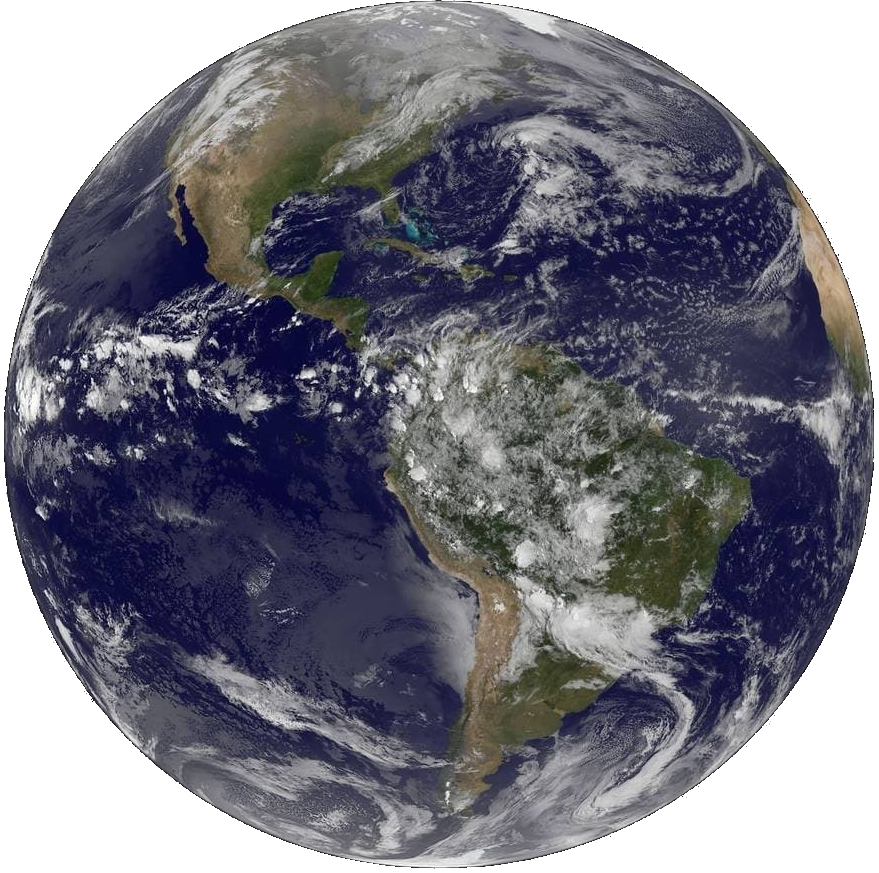

Земля (планета)
Земля является третьей планетой от Солнца и единственной в системе, где имеется жизнь. Небесное тело обладает большим количеством особенностей, и люди уже успели хорошо его изучить. Оно относится к планетам земной группы, наряду с Марсом, Венерой и Меркурием. Объект движется вокруг Солнца по определенной орбите и обладает уникальным климатом, благодаря которому существование жизни стало возможным.
Содержание
Внутреннее строение
Сердцевина Земли состоит из двух компонентов: внутреннего и внешнего ядер. Их радиус составляет 1300 км и 2200 км соответственно. В центре планеты температура способна достигать +5000 градусов Цельсия. Вокруг ядра находится слой мантии, который составляет примерно 84% от всего состава Земли. Он, в свою очередь, делится на верхнюю и нижнюю. Наружный слой мантии, называемый литосферой, начинается на глубине 2900 км от поверхности.
Литосфера имеет толщину в 100 км. Ее верхняя часть зовется земной корой и служит оболочкой планеты. Толщина на суше равна примерно 50 км, а на дне океанов — 10 км. Литосфера представляет собой совокупность больших плит, которые имеют свойство двигаться.
Гидросфера
Наличие жидкой воды на поверхности Земли является уникальным свойством, которое отличает нашу планету от других объектов Солнечной системы. Бо́льшая часть воды сосредоточена в океанах и морях, значительно меньше — в речных сетях, озёрах, болотах и подземных водах. Также большие запасы воды имеются в атмосфере, в виде облаков и водяного пара.
Часть воды находится в твёрдом состоянии в виде ледников, снежного покрова и в вечной мерзлоте, слагая криосферу.
Атмосфера
Появление сложных форм жизни на Земле стало возможным благодаря наличию атмосферы. Она имеет определенную структуру, состоящую из нескольких слоев. В прошлом в ее состав входили углекислый газ, водород, метан, аммиак и водяной пар. Но с течением времени большая часть этих элементов улетучилась в космическое пространство, а оставшиеся до сих пор удерживаются в атмосфере благодаря силе притяжения Земли.
Атмосфера Земли имеет 5 слоёв:
- Тропосфера. Нижний слой, высота которого составляет 12 км, является самым плотным, поскольку в нем находится наибольшее количество кислорода и других веществ. Температура в тропосфере с каждым километром падает на 6 градусов Цельсия по мере подъема;
- Стратосфера. Второй слой атмосферы, находящийся над Землей на расстоянии от 12 до 50 км. В нем присутствует большое количество озона, который не пропускает ультрафиолет, исходящий от Солнца. Таким образом, стратосфера защищает поверхность планеты от радиации;
- Мезосфера. Слой находится на расстоянии от 50 до 85 км над поверхностью Земли. Его средняя температура равна -90 градусов Цельсия;
- Термосфера. Четвертый слой атмосферы, который находится на высоте от 85 до 800 км. Он характеризуется высокими температурами: в некоторых местах этот параметр доходит до +1500 градусов Цельсия;
- Экзосфера. Верхний слой атмосферы планеты, который начинается на высоте в 800 км над поверхностью. Он содержит наименьшее количество кислорода, и примерно на высоте в 10 тысяч км постепенно переходит в космическое пространство, где не действует сила притяжения Земли.
Биосфера
Биосфера состоит из экосистем, которые включают в себя сообщества живых организмов (биоценоз), среды их обитания (биотоп), системы связей, осуществляющие обмен веществом и энергией между ними. На суше они разделены главным образом географическими широтами, высотой над уровнем моря и различиями по выпадению осадков. Наземные экосистемы, находящиеся в Арктике или Антарктике, на больших высотах или в крайне засушливых районах, относительно бедны растениями и животными; разнообразие видов достигает пика во влажных тропических лесах экваториального пояса.
Магнитное поле
Магнитное поле Земли в первом приближении представляет собой диполь, полюсы которого расположены рядом с географическими полюсами планеты. Поле формирует магнитосферу, которая отклоняет частицы солнечного ветра. Они накапливаются в радиационных поясах — двух концентрических областях в форме тора вокруг Земли. Около магнитных полюсов эти частицы могут «высыпаться» в атмосферу и приводить к появлению полярных сияний.